Plug-and-play microgrid library and testing of microgrid controller
Demonstration of the performance of both switching and average microgrid controller components in the Microgrid Library
Introduction
The Microgrid toolbox (see more here), is designed to provide you with realistic component-level building blocks that can be easily used for system-level modeling and real-time microgrid controller (MC) testing. Converter-based library components come in two varieties: switching and average. Switching is highly recommended for system-level testing of real converter controllers that require detailed power electronics models in order to interface the PWM outputs. The average models are behavioural twins of the switching models in terms of parametrization and dynamics, but take significantly less computation resources, making the better choice for situatuations where no PWM interface is needed. This example demonstrates a MC and its ability to handle a microgrid islanding situation by observing the net power flow at the point of common coupling (PCC) and engaging grid-forming mode in different distributed energy resources (DERs). In two separate cases, a battery inverter and a diesel generator (DG) are transferred from grid-following to grid-forming mode to compare their dynamic response.
Model description
The microgrid model (Figure 1) consists of four DERs (an Energy Storage System (ESS), a Wind Plant, a PV Plant, and a Diesel Genset (DG)) and three types of loads (a constant load, an interruptible load, and a variable load), all connected to the same point of common coupling (PCC). All components except the interruptible load are plug-and-play, directly introduced from our Microgrid Library. Each DER has its own 12.5 kV/480 V transformer. The ESS subsystem (consisting of a Battery inverter and a Battery), the Wind Plant, the PV Plant are all converter-based.
This model is designed to test one or more real converter controllers with PWM outputs in a microgrid system environment. For this reason, switching models of each component are used. By default, the microgrid components use the HIL’s internal modulator with SP-modeled control loops, as shown inside the Battery Inverter switching model (Figure 2). By unlinking the component from the library, you can remove the internal control and replace it with a real, external controller.
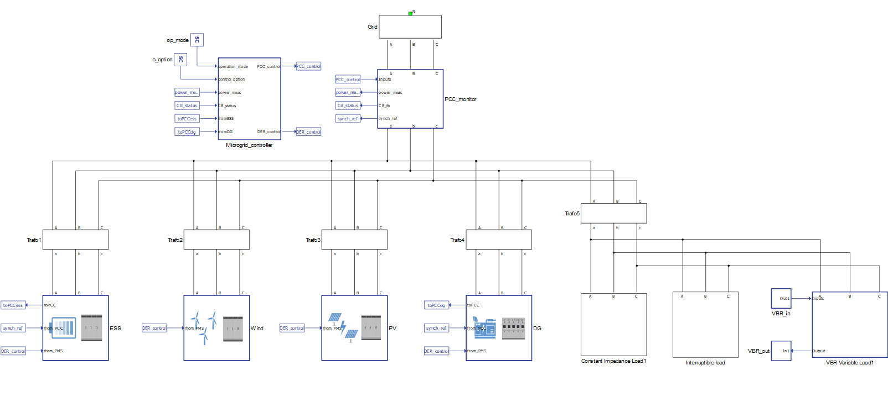
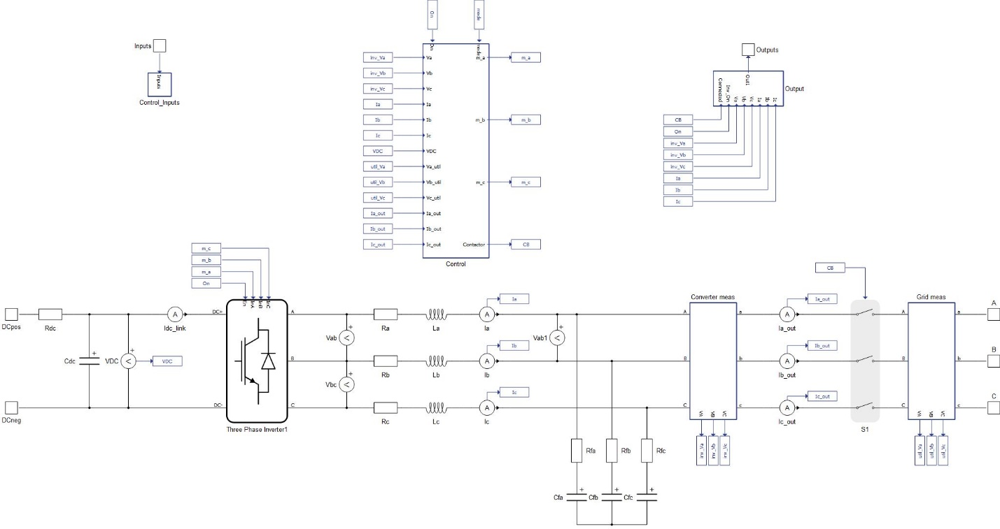
In addition to the internally modeled converter controller, each DER in this example has an extra “Interface” subsystem used to interface the microgrid component with the MC as shown in Figure 3. In this example, the interface uses only generic Signal Processing (SP) components so that it can be simulated with both a HIL device or Virtual HIL. For a real HIL-based system integration approach, the interface can be replaced with one of the industry-standard communication protocol components (CAN, Modbus, IEC61850 and others from the Communication library).
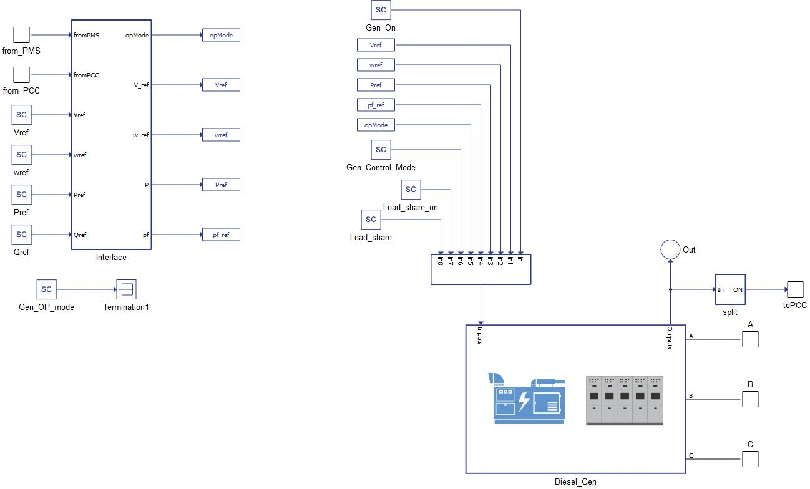
The MC is the brain of the microgrid. It can monitor and issue commands to the DER units and command the synchronization relay to connect or disconnect the microgrid from the main grid, depending on the operation mode requested by the microgrid operator and any grid faults. The MC also handles power flow regulation through the PCC. By sending power references to the grid-forming DER, the active and reactive power flowing through the PCC can be zeroed, allowing for smooth intentional islanding.
All DERs can be put into operation through the DER control signal coming from the MC, but only the ESS and the DG have extra inputs/outputs. Since they are the only two DERs not based on intermittent energy source, they can be selectively engaged by the MC as a grid-forming source. They provide information about power to the MC and receive power references in return.
The MC is fully implemented using Signal Processing Components (Figure 4). At the core of the MC logic are state machines (SM1 and SM2), implemented using C function components. They issue commands to the PCC circuit breaker and grid-forming DERs, with the support of the PI Controllers, Signal Routing, and Rate Transition components.
When using a HIL device, the MC's compiled C code runs on the HIL's ARM real-time processor, allowing the HIL device to be used for rapid control prototyping of the MC. In this setup, the HIL acts as supervisory device towards real DERs and loads (or lab emulators) through the use of analog/digital I/Os and communication protocols.
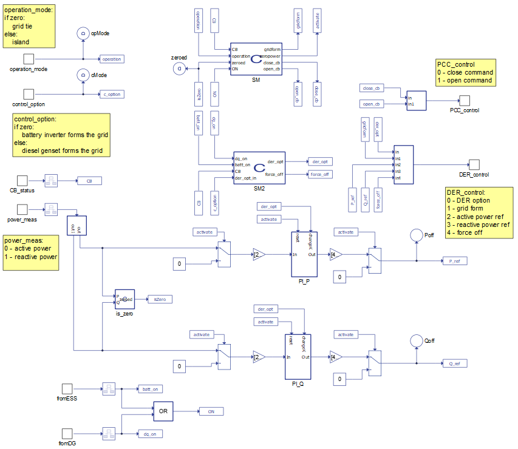
The PCC monitor oversees the power flow through the PCC and keeps the MC informed of the main breaker status. The breaker status signal serves as a trigger for the MC to start controlling the power flow by managing the DERs. Via this mechanism, the PCC monitor can perform synchronization protection and control, over/under voltage, and over/under frequency protection. The implementation of the PCC monitor is shown in Figure 5.
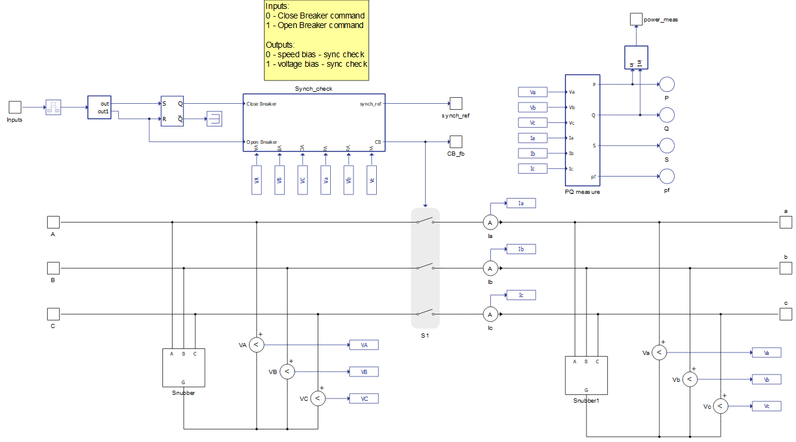
Simulation
This application comes with a pre-built SCADA panel shown in Figure 6. It offers the most essential user interface elements (widgets) to monitor and interact with the simulation at runtime, allowing you to further customize it according to your needs.
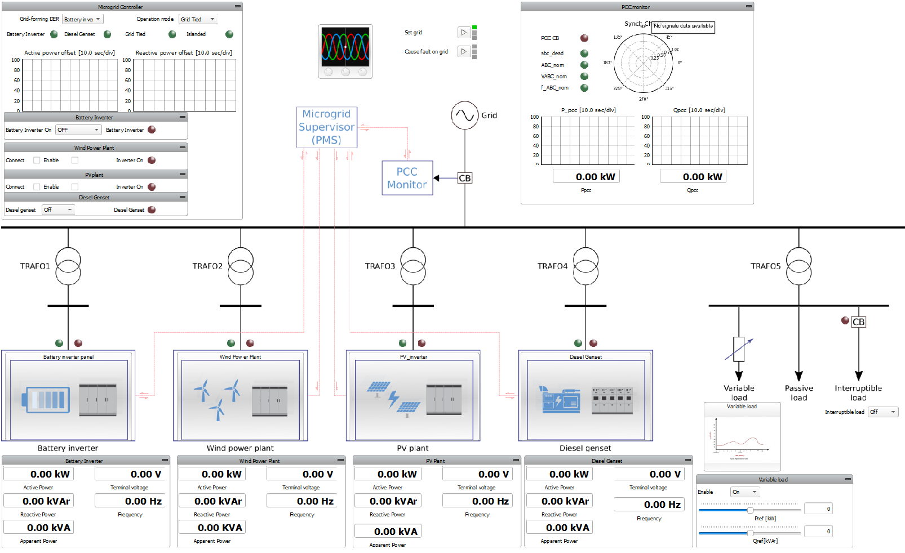
The first scenario is when all DER units are enabled and connected to the main grid. In this configuration, the DER units operate in grid-following mode. The microgrid operator can change the microgrid status by issuing a command to change the operation mode from “Grid Tied” to “Islanded”, which configures an intentional islanding. The microgrid operator can decide which grid forming capable DER is the main unit. Initially, the Battery Inverter is chosen.
The microgrid operator can use the “MC” widget group in the SCADA panel (Figure 7) to issue commands to the MC and observe its response. Through this interface, the main microgrid DER can be chosen and the microgrid operation mode selected. The active/reactive power offset graphs provide the information on the active and reactive power needed to be either sourced or absorbed by the grid-forming DER in order to reach net zero flow through the PCC. The first graph in Figure 8 shows the voltage and current of the battery inverter during the process of zeroing the PCC power flow and contactor opening. The second graph shows the active and reactive power offset and the third viewport shows the status of the PCC contactor. Also, the offset characteristic shown in Figure 7 gives the operator an idea of the ESS’s dynamic response to the intentional islanding.
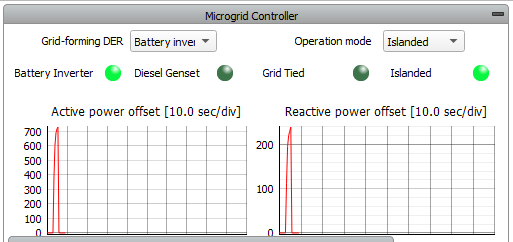
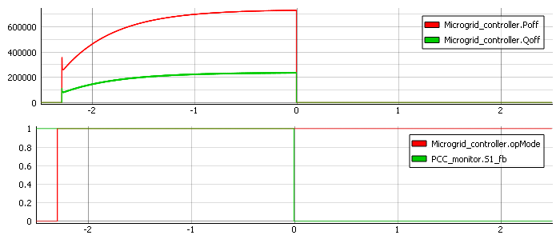
The same intentional islanding experiment can be done with the DG as the main DER unit. Figure 9 shows the active/reactive power offset commands sent by the MC to the DG. Due to the inertia and different dynamics of the DG, the response is slower compared to battery.
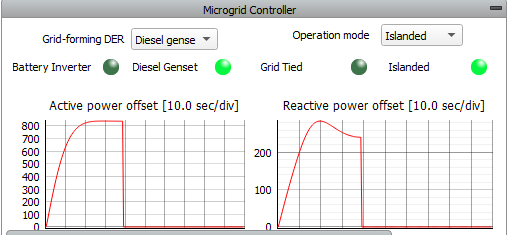
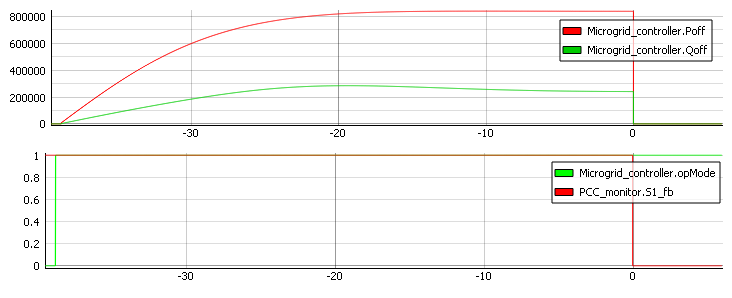
By pressing the “Cause fault on grid” macro button the operator can simulate unintentional islanding. The PCC monitor opens the contactor and informs the MC, which signals the grid-forming DER that the system has islanded. The DER unit chosen by the microgrid operator will then switch to grid-forming mode, but without the offset sequence that is only present in intentional islanding. This application also contains the TyphoonTest IDE script example (path provided in the table below) which can be used as a starting point for developing your own MC test automation.
Test automation
The provided test automation script demonstrates the transition of the microgrid example model into grid forming (or intentional islanding) mode after a fault in the grid. The first test case (upper graph in Figure 11) shows the PCC active power offset when the Energy Storage System is forming the grid, while the other case represents performance when the Diesel Genset is in grid forming mode (bottom graph in Figure 11). The test must be performed with a HIL6-series device, and it performs best in configuration 2.
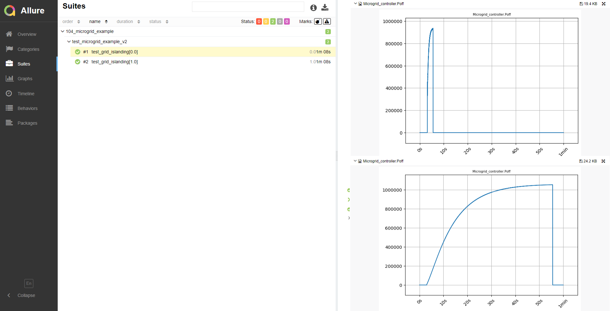
Example requirements
Table 1 provides detailed information about the file locations and hardware requirements for running the model in real-time, followed by the HIL device resource utilization when running the model using this minimal hardware configuration. This information is provided to help you with running and customizing the model as you see fit.
| Files | |
|---|---|
| Typhoon HIL files | examples\models\microgrid\microgrid example\terrestrial microgrid (switching)\ terrestrial microgrid.tse terrestrial microgrid.cus examples\tests\104_terrestrial_microgrid_(switching) test_terrestrial_microgrid_(switching).py |
| Minimum hardware requirements | |
| No. of HIL devices | 1 |
| HIL device model | HIL602+ |
| Device configuration | 1 |
| HIL device resource utilization | |
| No. of processing cores | 4 |
| Max. matrix memory utilization | 73.68%(core0) 82.59%(core1) 77.86%(core2) 77.37%(core3) |
| Max. time slot utilization | 72.5%(core0) 19.53%(core1) 21.25%(core2) 20.31%(core3) |
| Simulation step, electrical | 4 µs |
| Execution rate, signal processing | Multirate (200 µs, 1 ms) |
Authors
[1] Ognjen Gagrica
[2] Simisa Simic